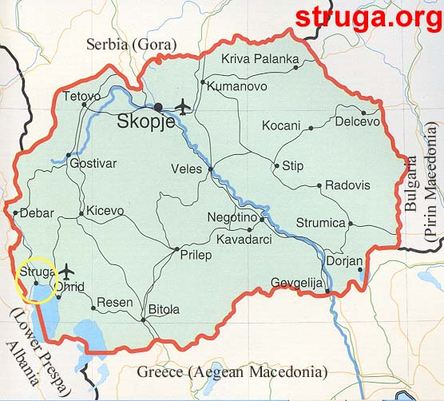

HOW TO REACH YOUR DESTINATION
Struga, R. of MACEDONIA

Republic of Macedonia has two international airports, the main airport in the capital Skopje "Alexander the Great Airport" (SKP) and another in"St.Paul the Apostle Airport" (OHD). There are around 150 flights in a week from different European cities to Skopje.From the low-cost airlines, only WizzAir flies directly between Skopje and London (Luton Airport), and Venice (Treviso Airport).
For more information please visit:
|
Skopje Airport TAV MACEDONIA DOOEL |
Ohrid Airport Address: |